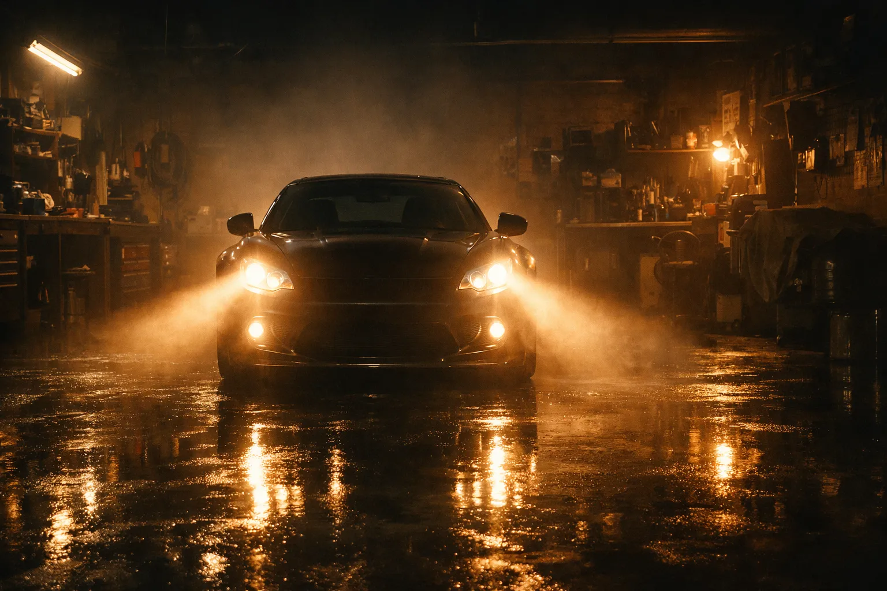
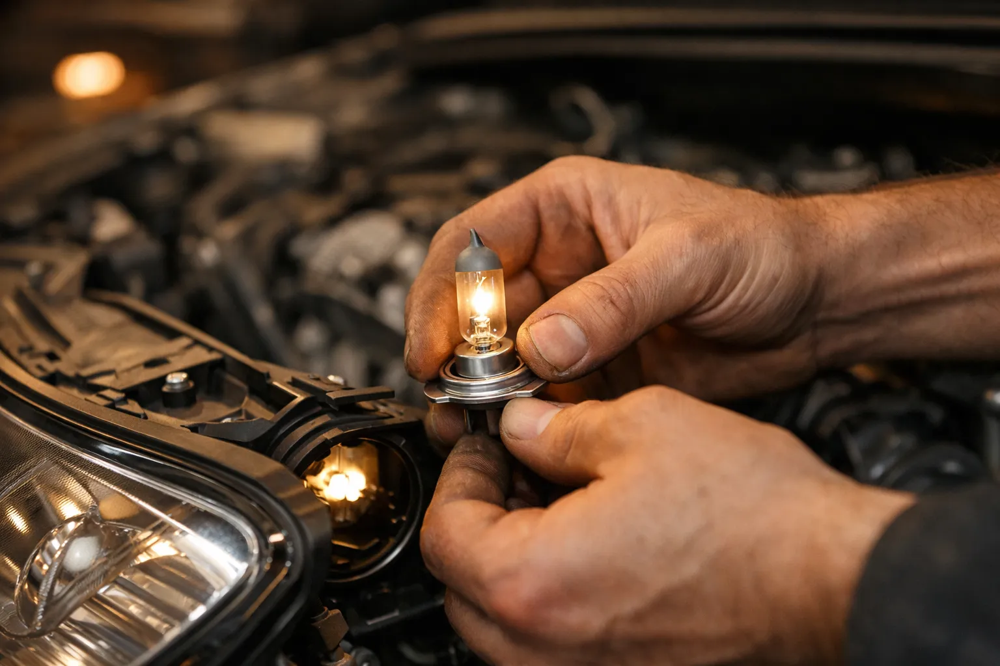

Remplacement d'ampoules et contrôle de l'éclairage de votre véhicule. Ali-Ka assure votre visibilité et votre sécurité à Etterbeek.

Une ampoule grillée. Cinq minutes de remplacement. Zéro excuse pour un refus au CT. Et pourtant, d'après Autocontrôle, c'est la première cause d'échec au contrôle technique en Belgique.
Chez Ali-Ka, Avenue des Casernes 10 à Etterbeek, on remplace toutes les ampoules de votre véhicule. Phares avant, feux de croisement, feux de route, feux arrière, feux de stop, clignotants, antibrouillards. Toutes marques. Voitures et utilitaires. Un phare grillé réduit votre visibilité. Un feu de stop éteint vous rend invisible pour celui qui vous suit. La nuit, sous la pluie, le risque est réel. Ne roulez pas avec un éclairage incomplet.
Halogène H1, H4, H7, H11. Ampoules de feux arrière. Clignotants. Veilleuses. Éclairage de plaque. Ali-Ka a le stock pour la plupart des véhicules en Belgique. Remplacement immédiat.
LED ou xénon ? Le diagnostic va plus loin. Le problème peut venir de l'ampoule, du ballast xénon ou du module de commande électronique. On identifie la panne exacte avant d'intervenir. Une batterie faible peut aussi réduire l'intensité lumineuse de vos phares. Un alternateur défaillant provoque un éclairage qui faiblit progressivement. On contrôle l'ensemble du circuit électrique pour que chaque feu fonctionne à pleine puissance.
Les ampoules halogènes restent les plus courantes et les moins chères. Elles offrent un éclairage correct pour la majorité des usages. Les LED consomment jusqu'à 80 % d'énergie en moins, durent trois à cinq fois plus longtemps et produisent une lumière blanche plus proche de la lumière du jour. Le xénon (ou bi-xénon) offre une puissance lumineuse supérieure, idéale pour les longues routes, mais nécessite un ballast et un réglage précis pour ne pas éblouir les autres conducteurs. Chez Ali-Ka, nous vous orientons vers la technologie compatible avec votre véhicule et votre budget.
En Belgique, la météo rend un bon éclairage indispensable. Pluie fréquente, brouillard en automne, obscurité dès 16h30 en hiver : vos phares travaillent plus qu'ailleurs en Europe. La réglementation européenne impose d'ailleurs des feux de jour (DRL) sur tous les véhicules neufs depuis 2011. Si votre voiture en est équipée, un DRL défaillant doit aussi être remplacé. Ali-Ka contrôle l'ensemble de vos feux — avant, arrière et diurnes — pour que vous restiez visible en toute saison.
Pas besoin de planifier. Passez directement à l'atelier. Lundi au vendredi, 9h-18h. Samedi, 9h-14h. On remplace l'ampoule. Vous repartez. C'est aussi simple que cela.
Depuis plus de 22 ans, les automobilistes d'Etterbeek, Ixelles, Schaerbeek, Woluwe-Saint-Lambert et Woluwe-Saint-Pierre viennent chez Ali-Ka. Un changement d'ampoule ou un diagnostic complet du système d'éclairage : même rigueur, même tarif honnête. Et si vos pneus montrent des signes d'usure ou que votre filtre habitacle sent le renfermé, on s'en occupe dans la foulée. Appelez le 02 647 47 01 ou passez directement.
Le prix varie selon le type d'ampoule (halogène, LED, xénon) et l'accessibilité du phare. Le remplacement d'une ampoule halogène standard est très abordable chez Ali-Ka, main-d'œuvre comprise. Appelez le 02 647 47 01 pour un devis.
Un voyant au tableau de bord peut indiquer un défaut d'éclairage. Vous pouvez aussi vérifier vos feux en les allumant devant un mur ou en demandant à quelqu'un. Chez Ali-Ka, nous effectuons un contrôle visuel complet lors de chaque passage.
Les LED consomment moins d'énergie, durent plus longtemps et offrent un meilleur rendu lumineux, mais elles coûtent plus cher. Les halogènes restent le standard sur de nombreux véhicules. Ali-Ka vous conseille la solution la mieux adaptée à votre voiture.
Oui, en Belgique un phare grillé, un feu arrière cassé ou un clignotant en panne entraîne un refus au contrôle technique. Ali-Ka remplace vos ampoules sans rendez-vous pour que votre véhicule soit en règle.
Oui, une seule ampoule grillée — même celle de la plaque d'immatriculation — entraîne un refus immédiat. C'est la cause numéro un d'échec au CT. Ali-Ka à Etterbeek vérifie et remplace toutes vos ampoules rapidement avant votre passage au centre d'inspection.